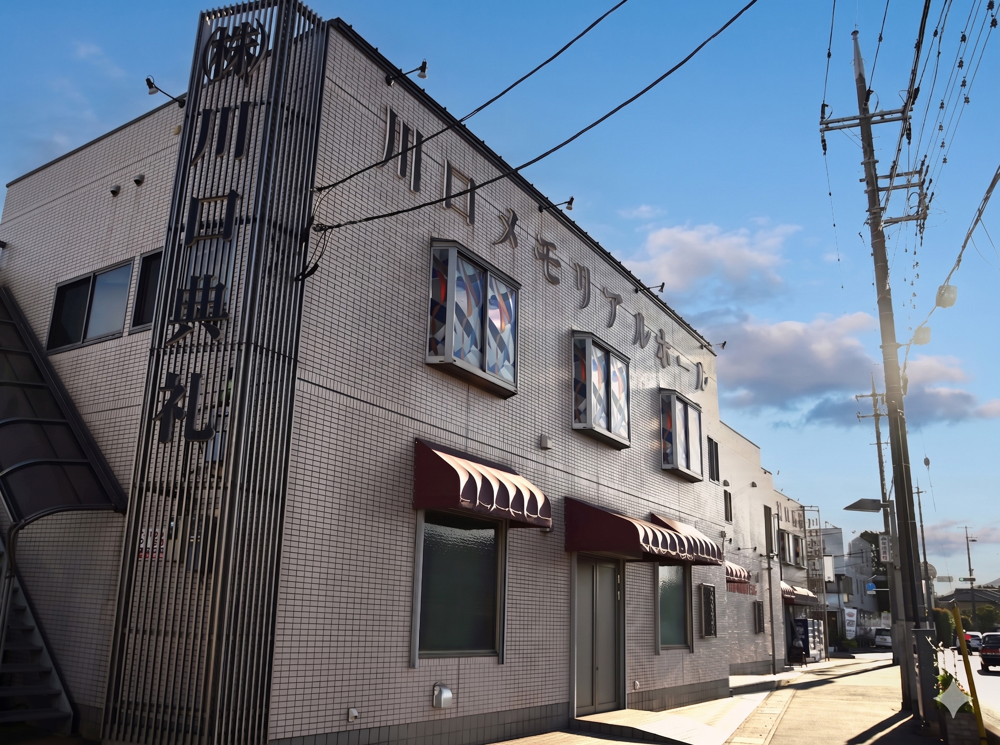

結論と作業状態
基本設定は整っているが、運用まで万全とはいえない。 今回は接続済みのEdgeで管理画面を読み取り、公開Google検索・マップとも照合した。駐車場の誤属性、未返信2件、サービス案内の不足、カバー写真の未設定、投稿の間隔、説明文の管理値と公開表示の差を確認した。
- 完了：メイン・追加カテゴリ、通常・特別営業時間、属性、説明文493文字、商品6価格、サービス3件、投稿履歴、写真管理、口コミ未返信フィルターの確認。
- 完了：駐車場の実態を松澤へ確認。「敷地内の無料駐車場のみ」と回答を受領した。
- 提案・未着手：駐車場3属性の訂正、口コミ2返信、相談・見学サービス2件、案内投稿1件、カバー写真の登録。下記に公開文面と画像候補を掲載した。
- 残る確認：Q&Aの実数、写真の最終追加日、説明文の公開差の原因、商品全6件の説明全文とリンク。取得できない値をゼロや設定済みに読み替えない。
- 未実施：Googleへの保存・投稿・返信・削除・アップロード、API再申請、サイトコード変更、commit/push、デプロイ。
引き継ぎプロンプトのステップ3「公開情報の書き換えは、差分一覧を松澤に提示して承認を得てから行ってください」に従う。駐車場の実態確認は受領済みだが、公開反映の承認とは別に記録する。
背景と接続経緯
資料には設定案がある一方、管理画面に実際に反映した記録が不足していた。そのため、過去の案を未実施と決めつけず、一項目ずつ読み取った。開始時には接続されたブラウザがログアウト状態だったが、ユーザーの「接続済み」回答後、Edgeで既存拠点の管理権限を確認できた。API承認待ちでブラウザ作業を止める必要はなかった。
開始時HEADはf077787。Claude CodeによるLPのデザイン差し戻し、家族葬の主ページ確定等の後続変更を尊重し、過去のCodex実装へ戻していない。利用者の未追跡画像にも触れていない。
対象は 株式会社川口典礼 川口メモリアルホール。所在地にある「ビル」の別エンティティではなく、名称・住所・電話を照合した事業者プロフィールを監査した。
基本設定の実測
| 項目 | 2026-09-06の実測 | 判断 |
|---|---|---|
| 名称 | 株式会社川口典礼 川口メモリアルホール | 現状維持。キーワード追加の改名はしない |
| メインカテゴリ | 葬儀屋 | 管理画面と公開表示で確認 |
| 追加カテゴリ | 斎場、葬儀サービス | 「火葬場」は登録されていない。現在の3カテゴリを維持 |
| 通常営業時間 | 日〜土の全7曜日が24時間営業 | 管理・公開とも一致 |
| 特別営業時間 | 管理画面は「追加」、登録日付なし | 未設定。祝日に休業するという意味ではない。祝日前に24時間対応の確認をする運用へ |
| 開業日 | 2006年1月10日 | 管理登録値。今回、登記等の原本照合はしていない |
| 住所 | 〒333-0833 埼玉県川口市西新井宿440-1 | 公開の全角数字等は表示差。同じ所在地として照合 |
| 電話 | 主0120-963-765、副048-281-1117 | 管理画面で両方確認。公開主電話も一致 |
| ウェブサイト | https://kawaguchitenrei.com/ | 正常。GBPを広告LPへ変更しない |
| 予約・見積もり専用URL | 調査した管理・公開UIに専用欄／リンクを確認できず | 未設定0件と断定しない。カテゴリによる機能差あり。利用可能になった際は本サイトcontact/・estimate/を使う |
| ソーシャルプロフィール | 「追加」の表示 | この監査では新たな外部アカウントを推測して登録しない |
| サービス提供地域 | 埼玉県、川口市、戸田市、草加市、西新井宿の5件 | 登録値。県全域の実際の対応範囲は別途業務確認。距離評価が薄まると断定して削らない |
| 説明文 | 管理画面に493文字（改行8文字を除くと485文字） | 750文字以内、プレイブック§3と一致。公開表示との違いは後述 |
| Q&A | 管理メニュー・公開UIで件数や一覧に到達できず | 実数不明。0件・サービス終了と断定しない |
属性の実測と訂正内容
公開Googleマップでは13項目、管理画面の設定概要では12項目の肯定属性を確認した。
| 区分 | 公開で肯定表示された属性 | 管理画面との照合 |
|---|---|---|
| バリアフリー | 車椅子対応のトイレ・座席・入り口 | トイレ・座席は「はい」。入り口と車椅子対応駐車場は編集欄で「はい／いいえ」どちらも未選択。入り口の公開表示との差の原因は未確定 |
| 所有者情報 | 女性オーナー | 管理概要にもあり。氏名や外見から推測した判断ではない |
| サービスオプション | 実店舗の営業 | 管理概要にもあり |
| 設備 | 男女共用トイレ | 管理概要にもあり |
| 客層 | LGBTQフレンドリー、トランスジェンダー対応 | 管理概要にもあり。運営方針の事実確認なしに変更しない |
| 駐車場 | 敷地内駐車場、無料駐車場、無料の路上駐車場、有料の路上駐車場、有料駐車場 | 5項目とも管理概要にあり。松澤回答と矛盾する3項目を特定 |
P1・駐車場の訂正案（公開反映は承認待ち）
- 維持：「敷地内駐車場」「無料駐車場」。敷地内無料70台は既存正本と整合する。
- 訂正：「無料の路上駐車場」「有料の路上駐車場」「有料駐車場」を「いいえ」へ変更する。
- 根拠：松澤の2026-09-06回答「敷地内の無料駐車場のみ」、lib/company.ts、プレイブック§2-3。
- 公開への影響：Google検索・マップの駐車場案内を実態に合わせる。その他の設備・客層・所有者属性には触れない。
口コミ28件と未返信2件
公開一覧を新しい順にして28件全件を読み込み、重複を除いた。平均4.5、星5が20件・星4が6件・星2が1件・星1が1件。返信済み26件、未返信2件、返信率92.9%。管理画面の「未応答」タブでも星2と星4の2件、返信ボタン2つを照合した。
最新の公開口コミは「4週間前」、返信は「2週間前」。相対表示から厳密な投稿日時や48時間以内の返信率は算出しない。口コミ本文・氏名・プロフィールURL・口コミIDは本レポートに保存しない。
| 内部識別 | 公開表示 | 照合 |
|---|---|---|
| R1 | 星2、7年前、未返信 | 管理の未応答タブに星2が1件 |
| R2 | 星4、8年前、未返信 | 管理の未応答タブに星4が1件。全星4は6件のため、反映時も未応答を使う |
P2・R1返信案（未送信）
評価をお寄せいただき、ありがとうございます。お返事が遅くなり、申し訳ございません。いただいた評価を受け止め、今後のご案内や対応の見直しに努めてまいります。差し支えなければ、当社までお電話でお話をお聞かせいただけますと幸いです（0120-963-765）。川口典礼
P2・R2返信案（未送信）
評価をお寄せいただき、ありがとうございます。お返事が遅くなりましたが、心より御礼申し上げます。これからも、ご家族のお気持ちに寄り添ったご案内を大切にしてまいります。川口典礼
公開の返信として送る内容である。個人名や葬儀の詳細に触れず、低評価への反論・事実争いをしない。根拠はチェックリスト§3優先1、プレイブック§8-3。古い2件の返信で平均評価が変わるとは説明しない。以後の新着確認と丁寧な対応を主目的にする。
商品とサービスは分けて確認
商品管理の一覧6件と公開の商品一覧で、次の価格を確認した。全6件がCLAUDE.md§9の通常価格または市民葬価格と一致。一日葬の訂正後496,000円も維持されている。
| GBPの商品名 | 今回のGBP価格・税込 | 正本の通常価格・税込 | 参考：事前相談会員価格・税込 |
|---|---|---|---|
| 直葬プラン | 189,000円 | 189,000円 | 139,000円 |
| 花入れお別れ会プラン | 279,000円 | 279,000円 | 229,000円 |
| 一日葬プラン | 496,000円 | 496,000円 | 396,000円 |
| 夕暮れ家族葬 | 551,000円 | 551,000円 | 451,000円 |
| 家族葬プラン | 628,000円 | 628,000円 | 528,000円 |
| 川口市民葬プラン | 231,000円 | 231,000円（市の葬祭事業） | 会員価格として扱わない |
価格の変更提案はない。一日葬の商品詳細には説明156文字、URL48文字の入力を確認したが、今回の操作環境ではフォームの全文値を取得できず、全商品の説明・リンクの完全照合は未完了。公開価格一致を「商品欄の全項目問題なし」と読み替えない。写真・商品カテゴリ・説明・URLを保存する操作はしていない。
サービス管理には追加カテゴリ「斎場」の下に「葬祭業」「斎場」「葬儀店」の3件。メイン「葬儀屋」と追加「葬儀サービス」のリストは空だった。「葬祭業」「斎場」の詳細は価格情報なし、説明0/300文字。3件目の説明全文は未確認。商品6件をサービス6件と数えない。
P3・相談と見学のサービス2件を追加する案（未登録）
登録先は「サービスを編集」→メインカテゴリ「葬儀屋」。既存3件を削除せず、無料相談と式場見学を追加する。価格欄はUIの「無料」が利用できれば無料、説明にも無料の範囲を明記する。葬儀自体を無料と表示しない。根拠はプレイブック§4の7・8番。
| サービス名 | 公開する説明文 | 価格 |
|---|---|---|
| 事前相談・お見積り | ご葬儀の流れ、費用の目安、プランに含まれる内容と別途必要な費用をご案内します。ご相談・お見積りは無料です。まだ何も決まっていない段階でもご相談いただけます。お電話でのご相談は24時間365日受け付けています。 | 無料 |
| 川口メモリアルホール見学 | 川口市西新井宿の自社式場をご見学いただけます。見学は無料・事前予約制です。敷地内に70台分の無料駐車場があり、個室面会室もご用意しています。お電話または当社サイトの事前相談フォームからお申し込みください。 | 無料 |
投稿履歴と次の投稿文
管理画面「すべての投稿」を末尾まで確認し、11項目を読み取った。公開日付き10件、拒否表示1件。最新は夕暮れ家族葬の案内で、公開カードの絶対日付は2026/07/30、管理は「先月」。それ以外は6か月前1件・7か月前2件・8か月前1件・9か月前1件・昨年4件。最新から実測日までは38日ある。管理UIで過去分の絶対日付は取得できていない。
週1投稿という社内計画が実行されている状態ではない。拒否された投稿は削除・再投稿していない。拒否理由の詳細は今回未取得なので推測しない。旧投稿の一部には長文・強い断定等が見られるが、その全文の法的・内容的な再監査は別途必要であり、無断で一括削除しない。
P4・次の投稿案（未送信）
テーマ：事前相談と式場見学のご案内。
川口メモリアルホールでは、ご葬儀に備える事前のご相談と式場見学を承っています。費用の目安、プランに含まれる内容、別途必要な費用など、気になることからお聞かせください。ご相談・お見積りは無料です。見学はご予約のうえご案内します。敷地内には70台分の無料駐車場があります。まだ具体的な予定が決まっていない方も、ご無理のないタイミングでご相談いただけます。
種別は最新情報、ボタンは「詳細」、リンクは 本サイトの事前相談。電話番号は投稿本文へ追加せず、相談導線はボタンで案内する。写真は次節の外観候補を人間が確認した場合のみ使用する。写真承認がない場合は本文・ボタンのみを対象にする。根拠はプレイブック§7の第2週。自動投稿予約や12週分の一括公開は今回の提案に含めない。
写真・ロゴ・カバー
| 確認面 | 件数・状態 | 限界 |
|---|---|---|
| 公開マップの写真一覧 | 32件 | すべての写真リンクを末尾まで読み込み確認 |
| 公開のオーナー提供タブ | 12件 | 同タブの末尾まで確認 |
| 管理画面 | 写真13件＋ロゴ1件 | 公開オーナータブの12件とは集計面が違う。差2件を審査落ちや未公開と推測しない |
| カバー写真 | 「カバー写真を追加」と表示 | 未設定として追加案を準備 |
| 写真の最終追加日 | 未取得 | 管理一覧・先頭写真ビューアに日付表示なし。公開写真1件の「撮影日:2024年10月」を追加日には使わない |
公開写真の終端も確認した。すべてはscrollTop8904＋clientHeight600＝scrollHeight9504、オーナー提供は2968＋600＝3568。読み込み途中の20枚を総数としないための確認である。管理一覧でも末尾移動後13写真＋ロゴの表示を再確認した。
P5・外観をカバーに登録する案（画像の人間確認と公開承認待ち）
候補は既存サイトで外観として使う hall-exterior.jpg。2400×1790px、1,277,422bytes、JPG。既存ファイルの加工・移動・改名はしない。建物名が読める自社ホールの外観で、来場者が建物を見分ける用途に適している。Codexで画像を閲覧したが、人間による掲載前の確認を代替しない。背景を含めて個人情報・人物・掲載可否を松澤が確認してから使う。
{kind=link}

根拠はプレイブック§5、CLAUDE.md§12・13。カバーに設定しても検索結果で必ず先頭に表示される保証はない。Googleの写真管理ヘルプ
説明文は管理値と公開表示に差がある
管理文は下記493文字で、再読込してから開き直しても同じだった。説明欄の概要に審査中・保留・承認待ちの文言は確認できなかった。一方、検索結果の「当社による説明」は「川口市めぐりの森から車で５分。大型駐車場を完備した…」で始まる別文で、「低価格でも…」「大手には出来ない…」等が残っていた。公開枠を展開し、ページ再読込後も差を確認した。
管理への入力済みは確認できたが、この文面の公開反映は確認できていない。 原因が審査待ち・配信遅延・別の表示更新なのかは不明。今回、同じ文面の再保存や新しい文への置換は行わない。2026-09-08を目安に読み取りで再照合し、差が続く場合は編集詳細の状態を確認してから対応案を決める（予約実行は作成していない）。
管理画面の現行文（新しい提案文ではない）
埼玉県川口市西新井宿の葬儀社、川口典礼です。2006年の創業から20年、川口市・新井宿・鳩ヶ谷を中心に、年間約260件のご葬儀をお手伝いしてきました。累計の施行実績は4,600件以上になります。
自社式場「川口メモリアルホール」は、川口市営の火葬場「川口市めぐりの森」まで車で約5分。ご火葬までの移動のご負担を抑えられます。敷地内に無料駐車場を70台ご用意しており、家族葬から200名規模の一般葬まで対応できます。個室の面会室もございます。
直葬・火葬式、花入れお別れ、一日葬、夕暮れ家族葬、家族葬、川口市の市民葬まで、ご希望とご予算に合わせてお選びいただけます。「夕暮れ家族葬」は、告別式を夕方から夜にかけて行い、翌日に火葬場へお集まりいただく当社オリジナルのプランです。日中はお仕事やご都合で集まりにくいご家族・ご親族にも、お別れのお時間をお取りいただけます。
ご相談・お見積りは無料です。事前のご相談も、お急ぎのご連絡も、24時間365日承っています。まだ何も決まっていない段階でも、お気軽にお声がけください。
電話：0120-963-765 ／ 048-281-1117
承認対象の差分一覧
| ID・優先 | 現状 → 目標 | 変更案 | 公開への影響 | 根拠 |
|---|---|---|---|---|
| P1・先行訂正 | 駐車場5項目肯定 → 実態に合う敷地内無料 | 路上・有料の3項目を「いいえ」。本文の松澤回答と一致 | あり | プレイブック§2-3、本人確認 |
| P2・優先1 | 未返信2件 → 既存未返信解消 | 上記R1/R2の文面で2件返信 | あり。公開返信を送信 | チェックリスト§3、プレイブック§8-3 |
| P3・案内整備 | サービス3件、相談・見学なし → 相談方法がわかる | 上記の無料サービス2件を追加 | あり | プレイブック§4の7・8 |
| P4・投稿再開 | 最新2026/07/30 → 現在の相談案内 | 上記本文・詳細ボタンで1件投稿 | あり | プレイブック§7 |
| P5・優先2 | カバー未設定 → 自社ホール外観 | 上記画像の目視承認後にカバー登録。必要ならP4にも使用 | あり。画像掲載 | プレイブック§5、CLAUDE.md§13 |
| 維持 | カテゴリ・通常営業時間・電話・住所・URL・商品6価格は整合 | 今回の変更対象外 | なし | 各実測、CLAUDE.md§9 |
| 継続確認 | 説明文の管理と公開が違う | 原因確認と2026-09-08目安の再照合 | 今回なし | プレイブック§3 |
| 保留 | Q&A・専用リンク欄・写真追加日が取得できない | 利用できるUIでの再確認。架空の件数や登録操作を作らない | 今回なし | 現行Google仕様 |
P1〜P5を項目別に承認できる形にした。承認後は対象だけを反映し、管理側の受付と公開側の表示を別々に確認する。Googleの審査・反映待ちで公開確認できない場合は、その状態と日時を追記する。
古い資料の判断を補正する点
- 129URLと20ページという数だけで「サイト品質で勝っている」とは証明できない。ローカル枠がクリックの大半を取るという主張も、対象検索の測定根拠なしに確定事実としない。順位停滞の唯一の原因を立地と断定しない。
- Googleは関連性・距離・知名度等を主な要因として説明し、正確な情報・営業時間・返信・写真の活用を案内している。週1投稿や月2〜4枚は社内目標であり、Googleが示す順位向上の必須条件ではない。ローカル順位の公式説明
- 名称は実世界で認識されている表記を基準にする。全角半角をそろえるためのGBP改名や「1文字違えば知名度が分散する」との断定は採用しない。カテゴリは実態を表す必要なものに絞る。広いサービス地域の設定が近接性を薄めるという因果も今回の公式確認では裏付けていない。掲載ガイドライン
- Q&Aと予約等の追加リンクは一部カテゴリ・地域でのみ提供され、機能が変わる場合がある。10問の自作投稿を一律の必須作業にしない。説明文は750文字以内・URLなし。プロフィール編集の公式説明
- プレイブック§4の会員価格主表示は古い案。現在のGBP通常価格主表示は許容されているので、会員価格へ戻さない。無料相談のサービスに葬儀プランの追加費用注記を機械的に付けない。
- プレイブックにある /hall/ の代わりに、現行詳細は /hall/kawaguchi-memorial-hall/。contact/、estimate/、現行ホール詳細のHTTP200を今回確認した。
- 8.8万円は正本のシンプル直葬の会員価格として存在する。外部媒体の8.8万円という数字だけで誤価格と断定せず、プラン・会員条件・面会条件・追加費用を確認する。
- GBPの通話ボタンは実着信ではなく、GA4のclick_telとも別の操作。人数として合算しない。GBPのURLを /lp/ に変えず、広告LPと本サイトの入口別集計を保つ。
- APIの429・割り当て0と再申請状況は既存記録。今回APIやメールを再確認した結果ではない。9/09前後のAPI確認はClaude Codeへの既存申し送りを維持し、新しい予約や再申請を作らない。
Claude Codeへの再開手順と残課題
- 本書を最新の実測入口にし、古いチェックリストの「未確認」をそのまま引き継がない。今回のP1〜P5は未反映・承認待ち。
- 接続済みEdgeから business.google.com を開き、既存拠点のオーナー管理メニューへ進む。Googleアカウントのパスワード・認証値は共有せず、画面で接続する。ログインできることとAPIの利用承認は別。
- 未返信は「クチコミを読む」→「未応答」で2件を再照合する。実際の送信直前に他の担当者の返信が追加されていないか確認する。
- 属性は「プロフィールを編集」→「その他」→「駐車場」。P1で指定した3項目だけを対象にする。その他の属性をまとめてOFFにしない。
- サービスの価格と商品の価格は別機能。P3は相談と見学のみ。現在一致している6商品の価格を変更しない。
- 写真は人間の目視承認が必要。今回の画像を選ぶ場合も、同意を受けるまでアップロードしない。カバーの先頭表示を保証しない。
- 2026-09-08目安：説明文の公開差、承認後に反映した項目があれば公開側を再確認。自動再実行は未設定。
- 次回の商品監査では6件すべての説明全文・URL・追加費用条件を取得する。本文が入力されているだけで整合済みとしない。
- 写真の最終追加日とQ&A件数はUIで取れなかった。未知の値を埋めず、別の提供画面やAPI承認後に取得できる場合に補完する。
- レビュー依頼を誰がいつ渡すか、投稿の週次担当、設備・客層属性の事実確認は社内運用として決定する。今回、代理店への連絡や口コミ依頼の送信はしていない。
変更ファイルと検証
今回の変更は記録のみ。
- docs/operations/gbp/2026-09-06-gbp-public-audit-and-proposals.md：実測・差分・公開文案・未確認事項の正本（本書）。
- docs/operations/gbp/2026-09-06-gbp-current-checklist.md：冒頭に最新実測へのリンクを追記。
- docs/reports/2026-09-06-gbp-public-audit-and-proposals.html：日本語の社内HTMLレポート。
- docs/reports/index.html：新しいレポートへのリンク。
サイトコード変更なしのためnpm run buildは対象外。静的生成ページ数や本番サイトの構成も変更していない。検証結果は、HTMLのnoindex,nofollow・インラインCSS・日本語指定あり、h1は1つ、13セクションの開始終了が一致、参照切れ0件、一覧リンク1件、説明文493文字、サービス説明104文字・102文字で300文字以内。git diff --checkも問題なし。顧客名・口コミ本文・認証値は記録していない。HTMLのブラウザ上のレイアウト表示は未確認だが、掲載候補画像自体は閲覧した。Google上の変更、commit/push、デプロイは未実施。